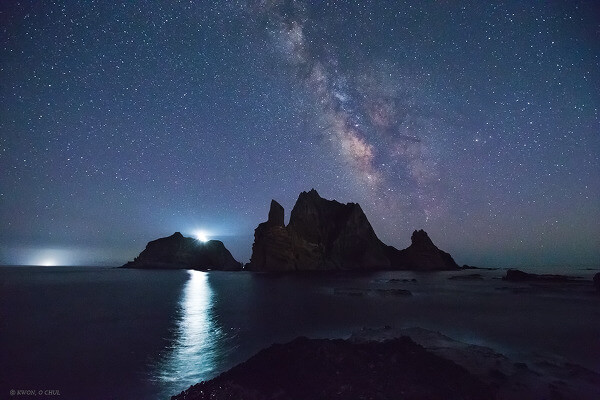
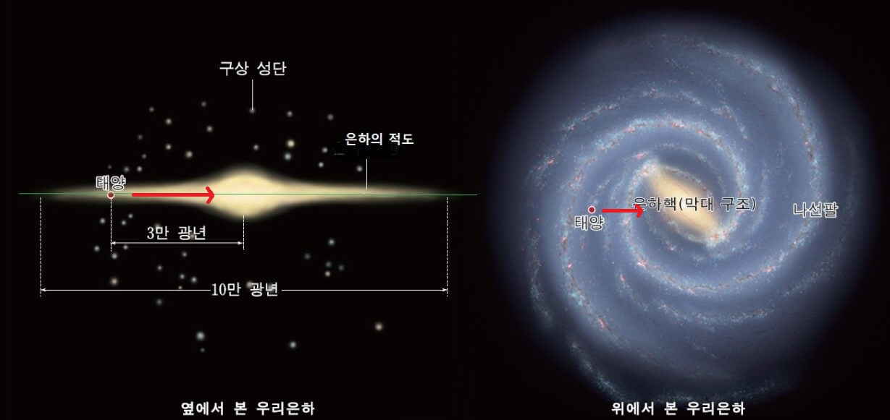
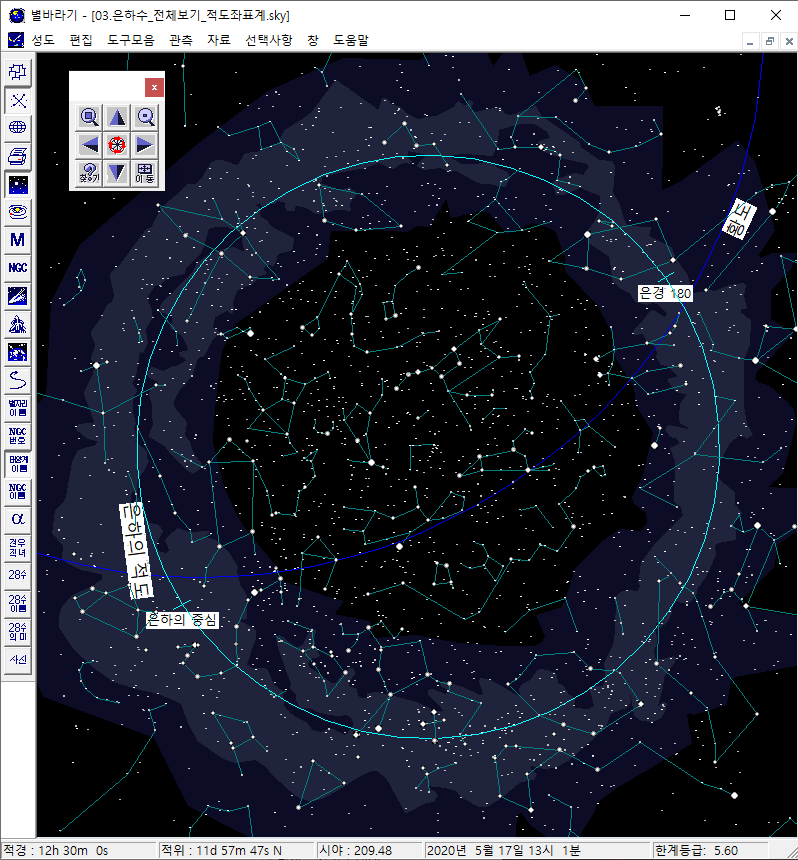
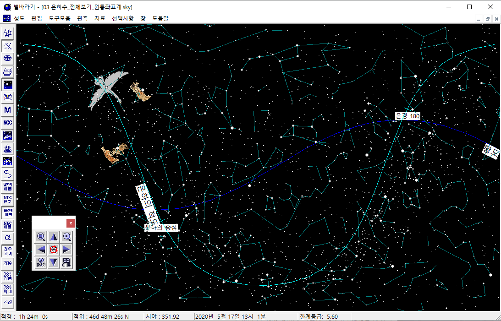

은하수는 눈부시도록 아름답다. 사진에서 뿐 아니라 맨눈으로 보는 실제 모습도 그렇다. 다만, 지금은 사람이 살지 않는 오지를 찾아가야만 볼 수 있는 풍경이다. 인공 조명이 없었던 시대엔 어디서나 쉽게 볼 수 있는 장관이었기에, 전설/노래/시 등에서 많이 인용되었다. 견우 직녀 이야기는 말할 것도 없고, 정지용의 시 향수에도 은하수가 나오고, 한라산도 은하수를 붙잡을 수 있을 정도로 높은 산이라는 뜻이다.
그런데, 지금은 눈부시도록 아름다운 은하수를 보는 것이 쉽지 않다. 인생의 버킷리스트에 올려 놓고 노력해야 할 정도이다. 먼저 아래 사진을 보며 은하수의 아름다움을 느껴보자. 옛 사람들이 보았을 풍경에 가장 가까운 사진으로 골랐다.
|  |
| 권오철 작. 독도, 은하수수가 흐르던 밤. |
은하수가 보이는 이유는 우리 은하의 생긴 모습과 관련이 있다. 우리 은하는 아래 그림처럼 가운데가 불룩한 원반 모양으로 생겼으며. 지구는 은하의 중심에서 3만광년 떨어진 곳에 있다. 지구에서 은하의 적도 방향을 따라서 보게 되면 수 많은 별들이 보일 것이다. 이것이 바로 은하수이다. 특히 은하의 중심 방향을 바라본다면 다른 곳보다 더 많은 별과 성운, 성단이 보일 것이다 (그림에서 빨간색 화살표 방향). 이 은하의 중심 방향이 바로 궁수 자리이다. 눈으로 볼 수는 없지만 은하의 중심에 블랙홀이 있다고 하니, 거대 블랙홀을 상상하며 은하의 중심 방향을 바라보는 것은 매우 재미있다.
|  |
| 우리 은하의 모습 (그림 원본: 천재학습) |
은하의 중심 방향은 실제 안시 관측 대상으로도 매우 재미 있는 곳이다. 만약 어두운 하늘에서 궁수 자리를 쌍안경으로 본다면 그 신비로움에 빠져들 것이다. 은하수의 은빛 물결과 암흑 성운이 만들어 내는 흑백의 아름다움 뿐만 아니라, 석호 성운 (M8), 오메가/백조 성운 (M17), 삼열 성운 (M20) 등 수 많은 성운, 성단의 향연을 만끽할 수 있는 곳이다. 다만, 고도가 낮아 이런 호사를 누릴 수 있는 기회는 그리 많지 않다. 관측 가능한 기간도 여름 한철로 짧고, 하늘도 맑아야 하고 하늘에 달도 없어야 하고 도심에서 100km 이상 떨어진 인공 불빛이 없는 곳이어야 한다. 쌍안경 또는 소형 망원경도 있어야 하고, 시력도 좋아야 한다. 이 모든 조건을 맞추기는 쉽지 않다. 그러나, 한 번이라도 이 모습을 본 사람이라면 평생 잊지 못할 추억이 될 것이다.
|  |  |
| 은하수 전체 모습. | 은하의 적도 부근에 밝은 별들이 많이 모여 있는 것을 볼 수 있다. |
별바라기 홈 최종 변경: 2020년 05월 31일